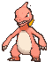
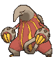
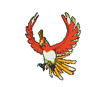
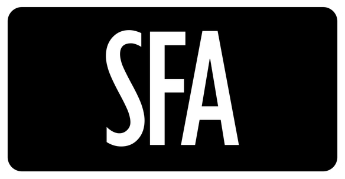
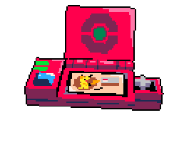
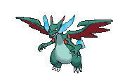
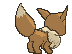
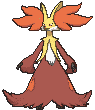
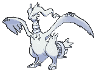

Mega Charizard X ex is a Stage 2 with 360 HP and one attack. Inferno X costs and does 90 for every Fire Energy you discard from among your Pokémon. The Bench counts, and there is no cap. How hard Charizard hits is a count of the Fire Energy on your side of the table, and nothing else.
Oricorio ex puts the Energy there. Its Ability, Excited Turbo, attaches a Basic Fire Energy card from your hand to one of your Benched Fire Pokémon, as often as you like during your turn, as long as any Fire Mega Evolution Pokémon ex is in play. Firebreather puts up to 7 Basic Fire Energy from the deck into your hand. Play both on one turn and the Bench holds 630 damage.
Fire discarded
Damage
One-shots
1
90
Cynthia's Roserade 130 and Metang 100, which are Fire-weak
2
180
Mega Excadrill ex 340 and Genesect ex 220, which are Fire-weak
3
270
Okidogi ex 250, Cinccino ex 240
4
360
Dragapult ex 320, Cynthia's Garchomp ex 330, Mega Sharpedo ex 330, Mega Kangaskhan ex 300, Gengar ex 280, Mega Gengar ex 350, Mega Chandelure ex 350
5
450
Garchomp in Cynthia's Power Weight at 400, Mega Venusaur ex 380
The Energy that stays behind is the real rule. Oricorio only reaches the Bench. The Active Charizard gets one attachment a turn from your hand, and Inferno X needs two on it, so never discard the Charizard's own Basic Fire unless the knockout needs it. Nitro R Energy makes this cheap. On the attacking Charizard it returns to your hand after Inferno X discards it, so a Charizard holding one Basic Fire and a Nitro swings every turn, and only the Bench pays.
A Mega gives up 3 Prizes, and this deck runs four of them. What pays for that is the HP. At 360, nothing the Wednesday regulars bring kills a Charizard in one hit, and every Charizard hit kills whatever it lands on. Two Mega knockouts is six Prizes, and so is three ex knockouts.
Basics: 9 (4 Charmander, 2 Oricorio ex, 2 Heatmor, and Ho-Oh), which puts the no-mulligan rate at 70%, a little under the 75-85% band. Every Basic here has a job, and a tenth opener would cost one of those jobs. Buddy-Buddy Poffin finds nothing, because the smallest Basic is Charmander at 80 HP. Poke Pad finds Charmander, Charmeleon, Heatmor, and Ho-Oh, and Ultra Ball finds anything.
Pokémon
Mega Charizard X exx3
Set
ME02: Phantasmal Flames 013/094
Rarity
Double Rare
Type
Fire
HP
360
Stage
Stage 2
Weakness
Water ×2
Retreat
2
Tournament
legal (Reg I)
Attack
Inferno X (90x) - Discard any amount of Fire Energy from among your Pokémon, and this attack does 90 damage for each card you discarded in this way.
The core, at three. Stage 2 from Charmeleon, 360 HP, 3 Prizes, Retreat 2, Water Weakness, no Ability.
Inferno X costs : discard any amount of Fire Energy from among your Pokémon, and the attack does 90 for each card you discarded. "Any amount" means you choose. Count the knockout first, then discard exactly that many, the Nitro first and then the Bench.
Three copies, plus Mega Signal, three Ultra Balls, and two Dawns, is nine cards that put a Charizard in your hand. One of those nine is in the first nine cards you see about 79% of the time. With three copies, one sits in the Prizes in about a quarter of games, and all three almost never do.
Charmanderx4
Set
ME02: Phantasmal Flames 011/094
Rarity
Common
Type
Fire
HP
80
Stage
Basic
Ability
Agile - If this Pokémon has no Energy attached, it has no Retreat Cost.
Weakness
Water ×2
Retreat
2
Tournament
legal (Reg I)
Attack
Live Coal (20)
The opener. Basic, 80 HP, Retreat 2, Water Weakness.
Agile: if this Pokémon has no Energy attached, it has no Retreat Cost. That makes it the right Active for turn one. It sits there, and on turn two it walks off for free so the loaded Charizard can step in. Never attach Energy to it, because that switches Agile off. Live Coal is for 20, and you will rarely use it.
Four copies, because Rare Candy needs a Charmander that has been in play since last turn, and the deck wants two on the board by the end of turn one.
Charmeleonx2

Set
ME02: Phantasmal Flames 012/094
Rarity
Common
Type
Fire
HP
110
Stage
Stage 1
Weakness
Water ×2
Retreat
2
Tournament
legal (Reg I)
Attack
Steady Firebreathing (40)
The Rare Candy backup. Stage 1, 110 HP, Retreat 2, Water Weakness. Steady Firebreathing is for 40.
Two copies. On a turn with no Candy, evolve by hand, and Charizard arrives one turn later. Dawn fetches a Charmander, a Charmeleon, and a Charizard in one card, so the Charmeleon it finds becomes a Charizard next turn without any Candy at all.
Mega Charizard Y exx1
Set
ME: Ascended Heroes 022/217
Rarity
Double Rare
Type
Fire
HP
360
Stage
Stage 2
Weakness
Water ×2
Retreat
1
Tournament
legal (Reg J)
Attack
Explosion Y - Discard 3 Energy from this Pokémon, and this attack does 280 damage to 1 of your opponent's Pokémon. (Don't apply Weakness and Resistance for Benched Pokémon.)
The second Mega. Stage 2 from Charmeleon, 360 HP, 3 Prizes, Retreat 1, Water Weakness.
Explosion Y costs : discard 3 Energy from this Pokémon, and it does 280 to one of your opponent's Pokémon, with no Weakness or Resistance on the Bench. It knocks out what Boss's Orders would otherwise have to drag up: a Roserade, a Gabite, a Drakloak, a Genesect ex, or a damaged ex hiding on the Bench. Battle Cage does not stop it, because it deals damage rather than placing counters.
It also counts as a Fire Mega for Excited Turbo. If the only Charizard X on the board goes down, a Y in play keeps Oricorio working. One copy, and it shares the Charmander line, so it costs no extra Bench space.
Oricorio exx2
Set
ME02: Phantasmal Flames 018/094
Rarity
Double Rare
Type
Fire
HP
190
Stage
Basic
Ability
Excited Turbo - As often as you like during your turn, if you have any Fire Mega Evolution Pokémon ex in play, you may use this Ability. Attach a Basic Fire Energy card from your hand to 1 of your Benched Fire Pokémon.
Weakness
Water ×2
Retreat
1
Tournament
legal (Reg I)
Attack
Fire Wing (110)
The engine. Basic, 190 HP, 2 Prizes, Retreat 1, Water Weakness.
Excited Turbo: as often as you like during your turn, if you have any Fire Mega Evolution Pokémon ex in play, attach a Basic Fire Energy card from your hand to 1 of your Benched Fire Pokémon. Read the limits exactly:
Basic Fire only. It can't attach Nitro R Energy.
Bench only. It never reaches the Active Spot.
Fire Pokémon only. Every Pokémon in this deck is Fire.
Nothing until a Mega is in play. A Charizard on the Bench counts.
Fire Wing is for 110, the fallback when nothing else can attack.
Two copies, and only one on the board at a time. Oricorio is 2 Prizes and the obvious Boss's Orders target, because killing it turns the engine off. Keep the second one in hand. It is a Basic, so it comes down and uses Turbo on the same turn the first one falls.
Heatmorx2

Set
SV: White Flare 019/086
Rarity
Uncommon
Type
Fire
HP
120
Stage
Basic
Weakness
Water ×2
Retreat
2
Tournament
legal (Reg I)
Attack
Licking Catch - Search your deck for up to 3 in any combination of Fire Pokémon and Basic Fire Energy cards, reveal them, and put them into your hand. Then, shuffle your deck.
Attack
Fire Claws (60)
The turn-one attacker. Basic, 120 HP, 1 Prize, Retreat 2, Water Weakness.
Licking Catch costs : search your deck for up to 3 in any combination of Fire Pokémon and Basic Fire Energy cards, and put them into your hand. Charizard X is a Fire Pokémon, and so are Oricorio and Charmeleon. Going second, a Heatmor opener turns turn one into a Charizard and two Energy for turn two. Fire Claws is for 60.
Two copies. On the Bench it is a single-Prize Fire Pokémon to park Turbo Energy on, which is the other half of its job. Air Balloon takes its Retreat to 0.
Ho-Ohx1

Set
ME04: Chaos Rising 010/086
Rarity
Rare
Type
Fire
HP
130
Stage
Basic
Weakness
Water ×2
Retreat
2
Tournament
legal (Reg J)
Attack
Flames of Revival - Put up to 3 Basic Pokémon from your discard pile onto your Bench.
Attack
Bright Wing (130) - Discard a Fire Energy from this Pokémon.
The Crustle answer. Basic, 130 HP, 1 Prize, Retreat 2, Water Weakness.
Crustle's Mysterious Rock Inn prevents all damage from Pokémon ex, and both Charizards and Oricorio are ex. Ho-Oh is not. Bright Wing is for 130 and discards a Fire Energy from itself, and Crustle is Fire-weak, so it lands as 260 into 150 HP. Oricorio loads all three onto a Benched Ho-Oh in one turn. Switch it in and swing.
Flames of Revival costs : put up to 3 Basic Pokémon from your discard pile onto your Bench. Knocked-out Charmanders come straight back, ready for Rare Candy next turn.
One copy, so it is prized in 1 game in 10. Night Stretcher brings it back after it falls.
Trainers — Supporters
Lillie's Determinationx4
Set
ME01: Mega Evolution 119/132
Rarity
Uncommon
Type
Trainer - Supporter
Ability
Shuffle your hand into your deck. Then, draw 6 cards. If you have exactly 6 Prize cards remaining, draw 8 cards instead.
Tournament
legal (Reg I)
Shuffle your hand into your deck and draw 6, or 8 with exactly 6 Prize cards remaining. Four copies, and the only draw Supporter in the deck. Going second, the turn-one Lillie's for 8 is legal and good. Don't play it on a hand that already holds next turn, meaning a Charizard, a Rare Candy, and Fire.
Firebreatherx2
Set
ME02: Phantasmal Flames 089/094
Rarity
Uncommon
Type
Trainer - Supporter
Ability
Search your deck for up to 7 Basic Fire Energy cards, reveal them, and put them into your hand. Then, shuffle your deck.
Tournament
legal (Reg I)
Search your deck for up to 7 Basic Fire Energy cards and put them into your hand. Two copies. It is two turns of fuel in one card. The first 360 needs four Basic Fire, the next one needs three, and Firebreather hands you seven. Play it after a Mega is in play, or the Energy waits in your hand for a turn.
It is a Supporter, so the Firebreather turn is never the Boss's Orders turn. On the first Charizard turn that rarely matters, because 360 kills whatever is Active. After that, Energy Retrieval does the refuelling and the Supporter goes to Boss.
Boss's Ordersx2
Set
ME01: Mega Evolution 114/132
Rarity
Uncommon
Type
Trainer - Supporter
Ability
Switch in 1 of your opponent's Benched Pokémon to the Active Spot.
Tournament
legal (Reg I)
Switch one of your opponent's Benched Pokémon into the Active Spot. Two copies. Charizard kills anything Active, so Boss is about choosing the Prize rather than reaching the damage. The best targets are the Pokémon that feed their attacker: a Roserade, a Drakloak, a Metang. Charizard Y does the same job from its own attack when the Supporter is needed elsewhere.
Dawnx2
Set
ME02: Phantasmal Flames 087/094
Rarity
Uncommon
Type
Trainer - Supporter
Ability
Search your deck for a Basic Pokémon, a Stage 1 Pokémon, and a Stage 2 Pokémon, reveal them, and put them into your hand. Then, shuffle your deck.
Tournament
legal (Reg I)
Search your deck for a Basic, a Stage 1, and a Stage 2 Pokémon. Two copies. The usual three are a Charmander or an Oricorio, a Charmeleon, and a Charizard X, which is a whole line in one card. After a Charizard falls, Dawn is the rebuild.
Trainers — Items
Rare Candyx4
Set
ME01: Mega Evolution 125/132
Rarity
Common
Type
Trainer - Item
Ability
Choose 1 of your Basic Pokémon in play. If you have a Stage 2 card in your hand that evolves from that Pokémon, put that card onto the Basic Pokémon to evolve it, skipping the Stage 1. You can't use this card during your first turn or on a Basic Pokémon that was put into play this turn.
Tournament
legal (Reg I)
Evolve a Charmander straight into either Charizard. Four copies. Two rules decide every opening. It can't be played on your first turn, and it can't be played on a Charmander that came into play this turn. So the fastest Charizard is turn two, on a Charmander benched on turn one.
Ultra Ballx3
Set
ME01: Mega Evolution 131/132
Rarity
Common
Type
Trainer - Item
Ability
You can use this card only if you discard 2 other cards from your hand. Search your deck for a Pokémon, reveal it, and put it into your hand. Then, shuffle your deck.
Tournament
legal (Reg I)
Discard 2 other cards from your hand, then search your deck for any Pokémon. Three copies, and with Trolley, Dawn, and Licking Catch, one of the four cards that can find an Oricorio. The discard is a feature here. Pitch two Basic Fire, and Energy Retrieval hands them back on the turn Oricorio needs them.
Poke Padx3
Set
ME03: Perfect Order 081/088
Rarity
Uncommon
Type
Trainer - Item
Ability
Search your deck for a Pokémon that doesn't have a Rule Box, reveal it, and put it into your hand. Then, shuffle your deck. (Pokémon ex, Pokémon V, etc. have Rule Boxes.)
Tournament
legal (Reg J)
Search your deck for a Pokémon that doesn't have a Rule Box. Three copies. It finds Charmander, Charmeleon, Heatmor, and Ho-Oh. It can't find either Charizard or Oricorio, which are all ex.
Mega Signalx1
Set
ME01: Mega Evolution 121/132
Rarity
Uncommon
Type
Trainer - Item
Ability
Search your deck for a Mega Evolution Pokémon ex, reveal it, and put it into your hand. Then, shuffle your deck.
Tournament
legal (Reg I)
Search your deck for a Mega Evolution Pokémon ex. One copy. It finds the X or the Y.
Energy Retrievalx3
Set
SV: White Flare 082/086
Rarity
Uncommon
Type
Trainer - Item
Ability
Put up to 2 Basic Energy cards from your discard pile into your hand.
Tournament
legal (Reg I)
Put up to 2 Basic Energy cards from your discard pile into your hand. Three copies. Every copy is 180 damage. Oricorio attaches from the hand, and this card fills the hand, so once the first Firebreather is spent, the discard pile is the fuel tank. It can't return Nitro, which is a Special Energy.
Night Stretcherx2
Set

SV: Shrouded Fable 061/064
Rarity
Uncommon
Type
Trainer - Item
Ability
Put a Pokémon or a Basic Energy card from your discard pile into your hand.
Tournament
legal (Reg H)
Put a Pokémon or a Basic Energy card from your discard pile into your hand. Two copies. Late in the game it is either a Charizard back or 90 more damage. Choose by what next turn needs.
Switchx2
Set
ME01: Mega Evolution 130/132
Rarity
Common
Type
Trainer - Item
Ability
Switch your Active Pokémon with 1 of your Benched Pokémon.
Tournament
legal (Reg I)
Switch your Active Pokémon with one of your Benched Pokémon. Two copies. It brings the loaded Charizard in from the Bench, or Ho-Oh in against Crustle, or gets a Heatmor that has done its job out of the way.
Precious Trolleyx1
Set
SV08: Surging Sparks 185/191
Rarity
ACE SPEC Rare
Type
Trainer - Item
Ability
Search your deck for any number of Basic Pokémon and put them onto your Bench. Then, shuffle your deck.
Tournament
legal (Reg H)
The ACE SPEC. Search your deck for any number of Basic Pokémon and put them onto your Bench. One copy. On turn one it benches the Charmanders, a Heatmor, and an Oricorio in one card, which is the whole board the turn-two Charizard needs. The Bench holds five, so leave the second Oricorio and Ho-Oh in the deck unless you need them now.
Trainers — Tool & Stadium
Air Balloonx2
Set
ME: Ascended Heroes 181/217
Rarity
Uncommon
Type
Trainer - Pokémon Tool
Ability
The Retreat Cost of the Pokémon this card is attached to is {{e}}{{e}} less.
Tournament
legal (Reg I)
The Retreat Cost of the Pokémon it is attached to is less. Two copies. On Charizard X, Retreat 2 becomes 0. That opens a reload trick: retreat an empty Active Charizard for free, Turbo two Fire onto it on the Bench, and Switch it back in, all in one turn. On Heatmor or Ho-Oh it does the same. Against Xero's lanterns it also shrinks what Phantom Maze hits for.
Battle Cagex2
Set
ME02: Phantasmal Flames 085/094
Rarity
Uncommon
Type
Trainer - Stadium
Ability
Prevent all damage counters from being placed on Benched Pokémon (both yours and your opponent's) by effects of attacks and Abilities from the opponent's Pokémon. (Damage from attacks is still taken.)
Tournament
legal (Reg I)
Prevent all damage counters from being placed on Benched Pokémon, yours and your opponent's, by effects of attacks and Abilities from the opponent's Pokémon. Damage from attacks still lands. Two copies.
It is the Dragapult card, because Phantom Dive spreads 6 counters across the Bench. It is also the Gengar card, because Chaotic Pain places 13 counters, which kills a Charmander, a Charmeleon, a Heatmor, or a Ho-Oh anywhere on the board. Xero's decks replace it with Risky Ruins, and the second copy is how Fox puts it back.
Energy
Basic Fire Energyx10
Set
MEE: Mega Evolution Energies 2
Rarity
Common
Type
Energy - Basic
Tournament
legal
Ten copies. Firebreather, Excited Turbo, Licking Catch, Energy Retrieval, and Night Stretcher all touch Basic Fire Energy only, so every Basic in the deck is a card the whole engine can reach.
Nitro R Energyx2
Set
ME04: Chaos Rising 086/086
Rarity
Rare
Type
Energy - Special Fire
Ability
As long as this card is attached to a Pokémon, it provides Energy. If this card is discarded by an effect of an attack used by the Pokémon this card is attached to, put this card into your hand after attack damage and effects.
Tournament
legal (Reg J)
The 90 that comes back. TCGplayer lists it as Nitro R Energy; the card prints the Fire symbol. It provides , and if an attack used by the Fire Pokémon it is attached to discards it, it goes back to your hand after the attack.
Attach it to the Active Charizard, discard it with Inferno X for 90, and it returns. Next turn, attach it again. A Charizard holding one Basic Fire and a Nitro pays Inferno X's cost every turn, and the Bench pays for everything above 90.
Two copies. Only the hand attachment can put it on a Pokémon, so a second one in hand does nothing that turn. It only comes back from the Pokémon that attacked. A Nitro on a Benched Pokémon that Inferno X discards is gone for good, and nothing in the deck recovers it.
The Energy Engine

Every attack spends its own fuel, so the deck lives by counting. Here is what a knockout costs.
Attack
Charizard holds
Discard
New Basic Fire needed
First 360
1 Basic Fire and the Nitro
the Nitro and 3 from the Bench
4
Every 360 after
1 Basic Fire and the Nitro again
the Nitro and 3 from the Bench
3
360 into Mega Excadrill ex
1 Basic Fire and the Nitro
the Nitro and 1 from the Bench
1
First 360, no Nitro
2 Basic Fire
4 from the Bench
6
And here is where the Fire comes from.
Card
Fire into your hand
Worth
Firebreather
up to 7
630
Licking Catch
up to 3
270
Energy Retrieval
2
180
Night Stretcher
1
90
Two rules keep it honest.
Choose to go second. Going first means no Supporter and no attack on turn one. Going second, a Lillie's for 8 and Heatmor's Licking Catch both work on turn one, and Charizard still arrives on turn two.
Keep one Basic Fire on the Active Charizard. Oricorio can't reach the Active Spot. A Charizard stripped bare needs two hand attachments to swing again, unless Air Balloon and Switch send it to the Bench to reload.
Game Plans
1. The Firebreather Turn
The line the deck is built to reach.
Win the coin flip, choose to go second.
Open on Charmander. On turn one, Precious Trolley or Poke Pad for a second Charmander, an Oricorio, and a Heatmor. Attach a Basic Fire to the Oricorio, not the Charmander, so Agile stays on.
Play Lillie's for 8, or Dawn, and hold the Rare Candy and a Charizard for next turn.
On turn two, Rare Candy a Benched Charmander into Charizard X.
Play Firebreather. Turbo one Basic Fire onto the Benched Charizard and two onto the others, so the Bench holds three besides the Charizard's own.
Retreat the Active Charmander for free. Charizard steps in. Attach the Nitro to it.
Inferno X: discard the Nitro and the three on the Bench for 360. The Nitro comes back to your hand.
Four Fire from Firebreather are still in hand. They can wait there for next turn or go onto the Bench now, where a hand shuffle can't touch them.
Rare Candy shows up in the first nine cards about half the time, before any Lillie's. On the other half, Charmeleon by hand makes it turn three. No Firebreather on turn two is fine too. Count the Fire in hand, add the one from turn one and the Nitro, and against Matt's Excadrill two is already a knockout.
2. The Nitro Loop

Every turn after the first has the same shape.
Attach the Nitro back onto the Active Charizard. Turbo whatever Fire you drew or pulled back onto the Bench. Count the knockout. Discard the Nitro first, then from the Bench, and leave the Basic Fire on Charizard alone.
After the first Firebreather, refuel with Energy Retrieval before reaching for the second one. Retrieval is an Item, so the Supporter is free for Boss's Orders on the turns the Prize you want is on the Bench.
3. One Oricorio at a Time
The opponent who knows this deck shoots the engine.
Bench one Oricorio and hold the other. When the first falls, the second comes down and uses Turbo the same turn. If there is no Oricorio at all, Charizard still attacks off hand attachments; the damage is smaller, but the game goes on.
The same goes for the Megas. Turbo needs one in play, so before the last Charizard on the board takes a hit, have another on the way. A Benched Y counts.
4. When the Y Comes Out
Candy into the Y when the Prize you want is on the Bench.
Pick the Y over a second X when something small feeds their attacker from the Bench (a Roserade, a Drakloak, a Gabite), or when a damaged ex is hiding there. Turbo its three onto it on the Bench, Switch it in, and fire. It hits for 280 anywhere, which is not enough to one-shot a 330 Mega in the Active Spot, so the X stays the main attacker.
5. Crustle Night
Everything with "ex" on it bounces off Crustle. Ho-Oh doesn't.
Bench a Charizard so Turbo works, then Turbo three onto a Benched Ho-Oh. Switch it in, and Bright Wing lands as 260 into 150 HP. Crustle decks pair it with Mega Kangaskhan ex at 300, which Charizard kills with four. If Ho-Oh falls, Night Stretcher brings it back. Two Fire Claws from a Heatmor also kill a Crustle in a pinch, at 120 each.
6. What This Deck Gives Up

Water Weakness on every Pokémon. Mega Greninja ex's Ninja Spinner at 200 doubles to 400 and kills a Charizard. Mega Starmie ex's Jetting Blow doubles to 240. Neither is a Wednesday regular.
It is a Stage 2. Charizard on turn two needs a Charmander from turn one and a Rare Candy, and the Candy is there about half the time.
Four Megas at 3 Prizes each. Two Charizard knockouts lose the game.
Every attack burns its fuel. Count the Energy Retrievals left before you over-discard. A 360 HP Pokémon with no Fire behind it hurts no one.
The Supporter crunch. Firebreather, Boss's Orders, Lillie's, and Dawn share one slot a turn.
Versus the Kitchen Table
Xero's Gengar decks. His biggest hits are Void Gale at 230 and Okidogi ex's Chain-Crazed at 260, and neither kills a Charizard at 360. Two of them do. He has three real answers, and Fox should know all of them.
Chaotic Pain. Gengar ex places 13 damage counters on any one Pokémon, which kills a Charmander, a Charmeleon, a Heatmor, or a Ho-Oh, and stops a Mega before it ever evolves. Battle Cage stops it on the Bench. Xero's answer is Risky Ruins, which replaces the Cage, and Fox's answer is the second Cage.
Shadowy Concealment. While a Mega Gengar ex is in play, every Darkness Pokémon an ex knocks out gives one Prize less, and both Charizards are ex. Kill the Mega Gengar first. Four Fire does it, and it gives 2 Prizes under its own Concealment.
Fainting Spell. When a Gengar ex is Knocked Out by an attack, Xero flips a coin, and heads knocks out the attacker too. A Charizard that kills a Gengar ex is betting 3 Prizes on a coin. Finish a damaged one with Heatmor or Ho-Oh when you can, and the bet drops to 1.
Xero's lantern decks.Binding Flame adds to Fox's Active's Retreat Cost for every Mega Chandelure ex in play, and Phantom Maze does 130 plus 50 for every . A bare Charizard X under one Flame takes 280, and 330 under two. With Air Balloon those drop to 180 and 230. Charizard survives all four, and four Fire kills a Mega Chandelure at 350. Dusknoir's 13-counter Ability can't touch the Bench while Battle Cage is up.
Versus the Card Shop
Shares from the Limitless online ladder since 30th Celebration, pulled September 27, 2026. The Wednesday league at CardCrate draws from this field.
Deck
Share
This deck's view
Dragapult ex, which Steve plays
about 19% across its builds
Phantom Dive does 200 to the Active, which a Charizard survives, and puts 6 counters on the Bench, which Battle Cage stops. Four Fire kills the 320 HP body. Play the Cage before the Charmanders and Oricorio get picked off.
Mega Excadrill ex, which Matt plays
4.6%
The best matchup. Excadrill is Fire-weak, so the Nitro and one Bench Fire kill the 340 HP body, and Maximum Drilling tops out at 330, which a Charizard survives. Metang and Genesect ex are Fire-weak too. The ladder has only two games of this matchup, both losses, so trust the math over the record.
Crustle
2.9%
Mysterious Rock Inn blocks every ex in the deck. Ho-Oh's Bright Wing doubles to 260 into 150 HP; see game plan 5.
Mega Sharpedo ex, which Steve played on September 23
2.0%
Hungry Jaws is 270, or 310 with Binding Mochi, and a Charizard survives both. Four Fire kills the 330 HP body.
Cynthia's Garchomp ex, which Elliot plays
1.5%
Draconic Buster is 260 plus 30 for each Roserade and Premium Power Pro, so it takes four boosts, 380, to kill a Charizard. Four Fire kills a bare Garchomp at 330, and five kills one in Cynthia's Power Weight at 400.
Cinccino ex
0.2%
240 HP, so three Fire, but Smooth Coat flips a coin against every hit.
Elliot's Roserade are the quiet threat. Each one adds 30 to his Garchomp. Each one is also Fire-weak and dies to a single Fire, 180 into 130, or two if it wears a Power Weight. Charizard Y reaches it on the Bench without a Boss's Orders.
Test and Tune
The list is a hypothesis. Here is what to watch and what each symptom points at.
Symptom
Fix
Charizard isn't out by turn three in most games
3rd Charmeleon or a 4th Poke Pad over the 2nd Switch
Charizard is out but the Bench has no Fire
3rd Firebreather over 1 Dawn, or see Meowth ex in Alternatives
The discard pile runs dry late
Energy Recycler over 1 Heatmor
Firebreather and Boss's Orders keep colliding
Prime Catcher over Precious Trolley
Crustle keeps winning
2nd Ho-Oh over 1 Heatmor
Hands flood with Energy and nothing to do
cut 1 Basic Fire Energy for a 4th Poke Pad
Alternatives


Cards and packages considered for this build, and the reason each one is not in the 60.
Card
Swaps for
Play it when
Fezandipiti ex (Shrouded Fable 038)
1 Heatmor
you want more draw. It is in 15 of the 17 top lists, and Flip the Script draws 3 after one of yours was knocked out. It is the card Xero cut from his own decks, and it is a Darkness Pokémon, so Turbo can't park Energy on it
Meowth ex (Perfect Order 062)
1 Heatmor
Firebreather keeps arriving late. Last-Ditch Catch searches for any Supporter when it is benched, so it finds Firebreather without spending the turn's Supporter. It is 2 Prizes on the Bench
Prime Catcher (ACE SPEC)
Precious Trolley
Firebreather and Boss's Orders keep colliding. It gusts and switches as an Item, so the big turn picks its target too
Max Rod (ACE SPEC)
Precious Trolley
long games run out of fuel. Five Pokémon or Basic Energy back to hand is 450 of Fire in one card
Blowtorch (Phantasmal Flames)
1 Switch
Elliot's Power Weight decides the Garchomp game. Discard a Basic Fire from your hand to discard a Tool, a Special Energy, or a Stadium. Without the Weight, Garchomp is a four-Fire kill, and Retrieval brings the Fire back
Reshiram (Phantasmal Flames 017)
Ho-Oh
you want more damage from the single-Prize slot. Burning Flare is for 240 and 60 to itself; Turbo loads it in one turn
Delphox line (Chaos Rising)
2 Heatmor and 1 Dawn
you want a draw engine. Flaring Magic discards a Basic Fire from your hand to draw up to 7, and Retrieval brings that Fire back. Five of the top lists run it, but it is a second Stage 2 line fighting Charizard for Candy and Bench seats
Energy Recycler
1 Heatmor
the second Firebreather finds too little. It shuffles 5 Basic Energy from the discard back into the deck
Three cards from NoGameChapo's list were left out on purpose. Vulpix and Ninetales are a second evolution line for Bench seats the Megas need. The 30th Celebration Moltres and Ho-Oh come from the set the shop banned for the week of September 23, so nothing here depends on it; the Chaos Rising Ho-Oh does the Crustle job instead. Buddy-Buddy Poffin has no target, since the smallest Basic is Charmander at 80 HP.
 Fox's Blue Flame
Fox's Blue Flame  x4
x4![Boss's Orders [Ghetsis]](./assets/654453_bosss-orders-ghetsis.jpg) x2
x2 x3
x3 x3
x3 x2
x2